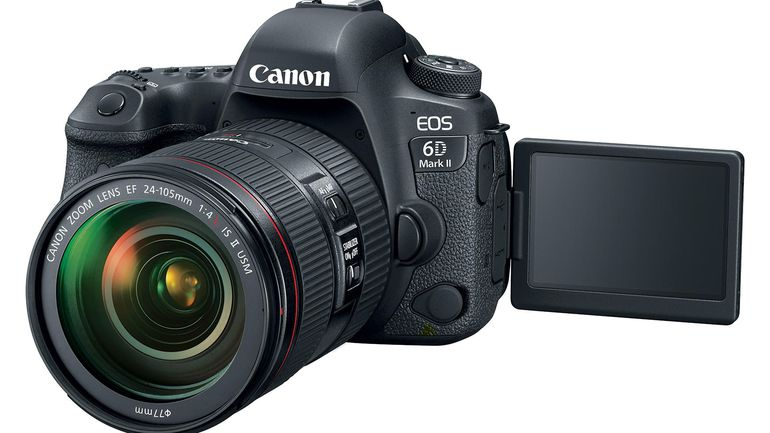
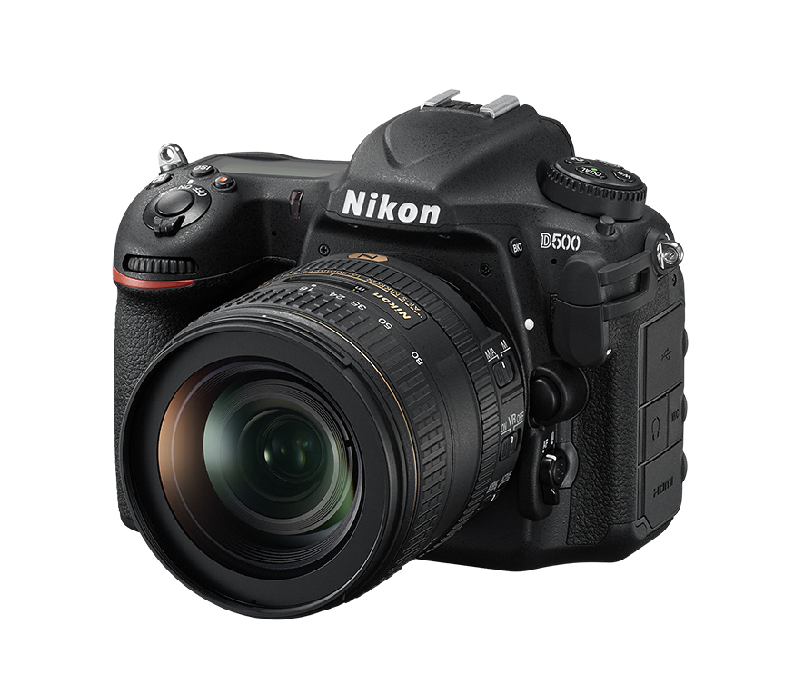

Фотоапарати

26.2 мегапикселов FullFrame сензор (36 x 24 mm) процесор: DIGIC 7 файлов формат: JPEG, RAW Full HD видеоклип (1920 х 1080) светлочувствителност: ISO 100 – 40 000 (разширен до 102 400) скорост на затвора: 30сек. - 1/4000сек. серия снимки: 6.5 кад./сек. дисплей: 3", 1 040 000 точки, LCD свързаност: Bluetooth, NFC и Wi-Fi тегло: 765 гр.
21.51 мегапикселов APS-C сензор (23.5mm x 15.6mm) процесор: EXPEED 5 файлов формат: JPEG, RAW 4k видеоклип (3840 x 2160) светлочувствителност: ISO 100-51 200 (разширен до 1 640 000) скорост на затвора: 30сек. - 1/8000сек. серия снимки: 6 кад./сек. дисплей: 3.2", 2 359 000 точки, LCD свързаност: Wi-Fi тегло: 860гр.
26.2 мегапикселов FullFrame сензор (36 x 24 mm) процесор: DIGIC 7 файлов формат: JPEG, RAW Full HD видеоклип (1920 х 1080) светлочувствителност: ISO 100 – 40 000 (разширен до 102 400) скорост на затвора: 30сек. - 1/4000сек. серия снимки: 6.5 кад./сек. дисплей: 3", 1 040 000 точки, LCD свързаност: Bluetooth, NFC и Wi-Fi тегло: 765 гр.
Цена: 1999 лв.
21.51 мегапикселов APS-C сензор (23.5mm x 15.6mm) процесор: EXPEED 5 файлов формат: JPEG, RAW 4k видеоклип (3840 x 2160) светлочувствителност: ISO 100-51 200 (разширен до 1 640 000) скорост на затвора: 30сек. - 1/8000сек. серия снимки: 6 кад./сек. дисплей: 3.2", 2 359 000 точки, LCD свързаност: Wi-Fi тегло: 860гр.